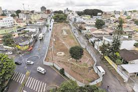

Jornal Do Eldorado
CoronaVírus
Vacinação contra gripe para grupos prioritários começa nesta segunda-feira (12).
A Campanha Nacional de Vacinação contra a Influenza começa nesta segunda-feira (12/4). Em Contagem, serão 35 salas de vacinação disponíveis, de segunda a sexta, das 8h às 16h. A vacinação foi dividida em três etapas, por grupos prioritários. A estimativa é imunizar 193 mil pessoas, sendo 43 mil crianças e 150 mil adultos.
Politica
Prefeitura realiza importantes obras de mobilidade urbana na região do Eldorado.
A Trincheira do Itaú, uma das maiores obras de mobilidade urbana dos últimos 30 anos, já está em fase de conclusão, com inauguração prevista para agosto.
Esportes
Liga de Contagem promove encontro com Marília Campos para debater futuro do esporte amador
A Liga de Contagem promoveu mais um encontro virtual para debater as diretrizes do programa de melhorias para o futebol amador da cidade. A reunião foi realizada dia 11 de agosto. Dessa vez, além dos diretores e dirigentes de times do futebol da cidade, o encontro contou com a presença da deputada estadual e pré-candidata […]
Gastronomia

Prefeitura de Contagem inaugura primeiro Restaurante Popular da cidade
A população de Contagem já tem o seu restaurante popular. Na sexta-feira, 30/8, dia em que o município comemorou 102 anos, a Prefeitura de Contagem presenteou seus moradores inaugurando a primeira unidade do Restaurante Popular da cidade. E a população já pôde saborear uma comida bem feita e balanceada. O cardápio do dia foi arroz, feijão tropeiro, carne de porco e couve, além de uma fruta. E tudo isso por apenas R$ 2,00.
Cultura

Biblioteca pública oferece ótima opção para as férias
Criada em 1952, a Biblioteca Pública Municipal Dr. Edson Diniz possuium acervo com cerca de 19 mil volumes. Basta fazer um cadastro para ter acesso às obras
Economia
Paralisação de obras no bairro Eldorado prejudica população de Contagem Lama, sujeira e tráfego pesado são algumas das queixas dos moradores; obra de R$ 5 milhões está parada há quase um mês devido a impasse com camelôs
Comerciantes e moradores no bairro Eldorado, em Contagem, na região metropolitana de Belo Horizonte, estão insatisfeitos com os transtornos causados pela paralisação das obras do chamado Boulevard Portugal, um projeto de grandes proporções da Prefeitura de Contagem, que pretende instalar três praças na rua homônima.